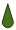

Geo Théo Guesser
Could you beat an IA guessing where you are in Theo’s apartment?
- # of Guesses:
- Your score:
- AI's score:
The concrete application we target is robot localization, also called ego-pose estimation, which
requires to estimate the 3D position and orientation (angle) of a mobile robot navigating in a 3D
environment, in our case an apartment. At each time step t, the robot
observes two ego-centric images
(an RGB
image It and a depth image Dt ) from an onboard camera, from
which a convolutional neural network directly regresses the robot’s pose pt = f(It, Dt; θ), where
θ are
the network parameters obtained with supervised training in simulation. The pose is defined as pt = [xt, yt, ɑt],
two coordinates and an angle.
Simulation is a promising direction, which enables training to proceed significantly faster than
physical
time on fast modern hardware, easily distributing multiple simulated environments over a large number of
cores and machines. However, neural networks trained in simulated environments generally perform poorly
when deployed on real robots and environments, mainly to the sim2real gap,
i.e. the lack of accuracy
in simulating real environment conditions, for instance, changing luminosity through the day. The exact
nature of the gap is often difficult to
pinpoint, and modelling this gap and a successful transfer from simulation to physical environments has
become a major subfield between machine learning and robotics.
This work is at the crossroads of three different fields and explores techniques of data visualization
to advance machine learning for robotics applications. We propose new techniques for the visualization
of the sim2real gap, which provide insights into the difference in
performance obtained when neural
networks are applied out of distribution (OOD)
in real settings. The
objective is to pinpoint transfer
problems and to assist researchers and engineers in the fields of machine learning for robotics to
design neural models which better transfer to real world scenarios.
The dataset we are using in this work, is generated from a 3D scan of Theo's apartment which results in
a point cloud. This cloud is then converted into a Matterport 3D [5] environment
with meshes i.e. objects that cannot be walked through. Then, we use habitat sim[3] to build a simulator in which a virtual robot can
move. The dataset(images) used in this work is sampled from this simulator with habitat API while
insuring that each of them is different enough in term of
orientation and location.
Let's see how a model performs
Inspired by PoseNet [4], we designed and trained a convolutional deep learning model able to regress the coordinates and orientation of a given RGB (color) & depth image. This model contains five CNN layers used to process the given images and extract features from them. Those extracted features are then given to three fully connected layers which use these features to decide the location (x and y coordinates) and orientation angle.
xt = 12.6,
yt = 3.84,
ɑt = 63.12
It (RGB)
Dt (Depth)
In the figure below (right side), we show a collection of RGB and depth images. Superimposed over the map image (below, right), we present the predicted poses estimated by the deep neural network, drawn as oriented arrows (). The given images are not part of the training set, the obtained error therefore shows the sim2sim generalization performance, indicating whether the model can perform well on unseen images in simulation. Hovering those arrows with the mouse will display the ground truth coordinates of those images and hence how wrong a prediction is. The color of each dot encodes the prediction error, i.e. distance to the ground truth colored between green (low error) to red, (high error).
To the left, we provide a visualization of the feature representation used by the neural network in the form of the activations of its last CNN layer (indicated in the figure above). We show a Umap projection of features extracted from nearly 12000 previously unseen images. The location of its dot represents the features of an image, and its color corresponds to the room this image has been taken from based on predicted coordinates (the mapping from locations to rooms has been determined manually). We can observe that the model is quite able to distinguish rooms, with the exception of some ambiguities at the intersection of clusters. We can conclude that the model properly learned to identify rooms, as long as we stay in the same simulated environment.
Such a model is quite noise sensitive..
Let us recall that the main objective of such a neural model is to deploy it to a real environment involving observations from a real physical robot. This will result in differences with respect to the simulated training environment, for instance, displaced, removed or additional objects, opened or closed doors, but also low level changes like different luminosity and lighting, different focal lengths and geometry of the camera and other disparities due to different physical conditions. Those differences called the reality-gap, may have a huge impact on the model's prediction despite not being particularly difficult for humans. As an illustration, the figure below shows two different observations from roughly the same orientation and coordinates. The images on the left side, provided by the simulator tend to be more yellowish and are shaded a bit differently. In addition, the real camera does not have the same focal length. The two depth sensor does not have the same dynamic range. This results in an important shift of values (light gray) which, if taken literally without adaptation, could can be interpreted as free navigational space ahead although obstacles are present in the scene.
Simulator
Real


RGB
Depth
Depth
RGB
To ease evaluation and visualization, in what follows, we approximate a real sim2real gap through a procedurally created difference. In the figure below, we simulate different disparities by applying different noises, which can be chosen interactively, on a simulated trajectory. Shown below we can observe the impact of these disparities on the model's prediction. On the left side, simulated features are projected into the same parametric Umap space, i.e. dots locations in this projection share the same meaning. We can observe how some rooms are more affected than others by the gap. For instance, we can see that with the input #8 and Gaussian noise, the model predicts the corresponding coordinates in an other room, despite having both features at the same location in Umap. With a pepper noise, input#1, have a room shift between the kitchen and the living room in both Umap and regression. However, with the same input, and a gaussian blur, the model predicts a location closer to furniture ahead. This may be due the fact that in the noisy saliency map, the focus of the model seems to be on the chair and the table as opposed to the floor in the noiseless input. Overvall, the biggest disturbancies are caused by the pepper, or edge-enhancing . ne hypothesis we came up with is that the model heavily relies on the depth channel, which is most impacted by those noises, for its decisions. As we can see below, most of the model's predictions are far from where they were sampled.
Simulator
Noise
Domain Randomization to the rescue
A standard technique to tackle these an issues, is Domain Randomization [2]. It consist in modifying high level parameters of the simulator in order to force the agent to adapt to those changes and thus learn invariant features. The changes in the simulator can take many forms, such as visual data augmentation (e.g. gaussian noise, lighting, textures, colors balance) or changes on the simulator itself (e.g. camera position, orientation or field of view). Those changes are applied during the training phase of the agent, and as we observe below this improves the performances of the neural model on unseen simulated images and "real" images.
Simulator
Noise
0
What about Real Images?
Implementation
This project uses the JavaScript library d3 to display data extracted from the Deep convolutional network implemented in Python using PyTorch. The apartement simulated with Habitat. If you are interested in how this paged was designed, you can visit it's github repository.
Authors
Théo Jaunet (@jaunet_theo), Romain Vuillemot (@romsson) and Christian Wolf (@chriswolfvision), at LIRIS lab Lyon - France.
This work takes place in Théo jaunet's Ph.D. which is supported by a French Ministry Fellowship and the M2I project,Citations
-
Deep Reinforcement Learning on a Budget: 3D Control and Reasoning Without a
Supercomputer
[URL].
Edward Beeching, Christian Wolf, Jilles Dibangoye and Olivier Simonin
International Conference on Pattern Recognition (ICPR), 2020
-
Domain
randomization for transferring deep neural networks from simulation to the real
world [URL]
Josh Tobin, Rachel Fong, Alex Ray, Jonas Schneider, Wojciech Zaremba, Pieter Abbeel
IEEE/RSJ International Conference on Intelligent Robots and Systems (IROS), 2017 -
Habitat: A Platform for Embodied AI Research [URL]
Manolis Savva, Abhishek Kadian, Oleksandr Maksymets, Yili Zhao, Erik Wijmans, Bhavana Jain, Julian Straub, Jia Liu, Vladlen Koltun, Jitendra Malik, Devi Parikh, Dhruv Batra
Proceedings of the IEEE/CVF International Conference on Computer Vision (ICCV), 2019 -
Posenet: A convolutional network for real-time 6-dof camera relocalization [URL]
Alex Kendall, Matthew Grimes, and Roberto Cipolla
Proceedings of the IEEE international conference on computer vision (ICCV), 2015 -
Matterport3D:
learning from RGB-D data in indoor environments. [URL]
Angel Chang, Angela Dai, Thomas Funkhouser, Maciej Halber, Matthias Nießner, Manolis Savva, Shuran Song, Andy Zeng, Yinda Zhang
International Conference on 3D Vision (3DV), 2017